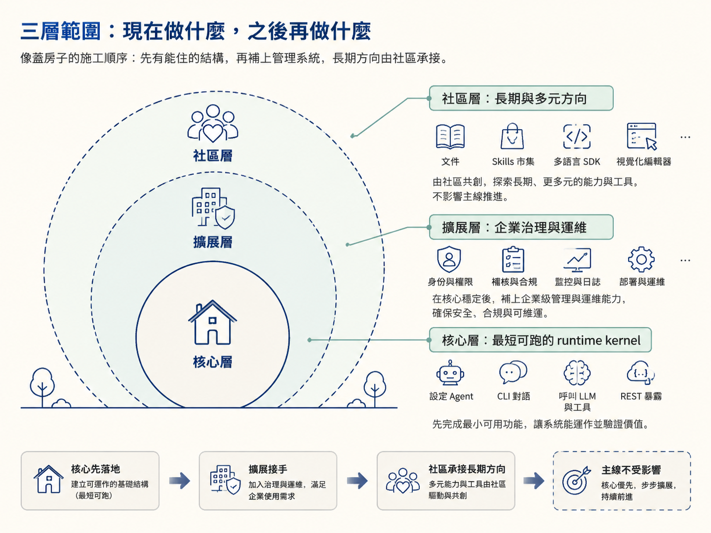
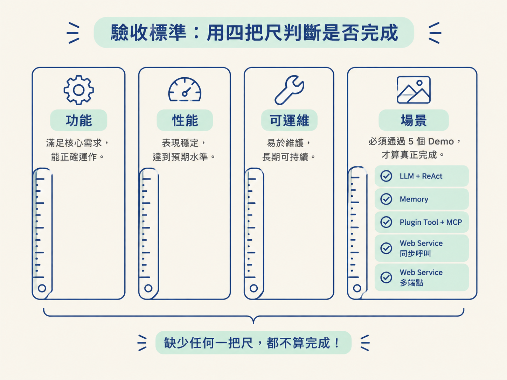
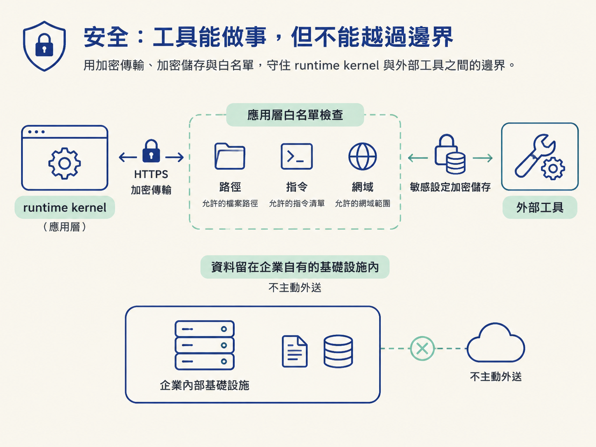

一個專案最容易失控的時刻，往往不是寫不出功能，而是每個人都在做「看起來合理」的事，最後卻沒人說得清楚什麼必須完成、什麼可以延後。OryxOS 用三層範圍劃出邊界，再用四層驗收標準定義完成。這讓團隊能先做出可運作的 runtime kernel，再把企業治理與長期生態放到適合的階段。
學完這篇，你應該能分清楚核心、擴展、社區三層各自負責什麼，複述四層驗收標準與五個必過 Demo，並說出核心階段的性能、可靠性與安全硬指標。
三層範圍像蓋房子的施工順序：核心先把能住的結構蓋起來，擴展再補上企業使用需要的管理系統，社區則承接更長期、更多元的方向。這樣可以避免第一版同時追逐所有目標，最後連最短可跑的鏈都交不出來。

| 層 | 放什麼 | 誰做、什麼節奏 |
|---|---|---|
| 核心 | 最短可跑的鏈：Profile 設定、CLI 對話、呼叫 LLM 與工具、REST 暴露 | 4 週 × 3 小時 = 12 小時，必須做完 |
| 擴展 | 生產必需但不在核心：企業治理層 | 核心完成後接手，跟隨社區節奏 |
| 社區 | 長期方向：文件、Skills 市集、多語言 SDK、視覺化編輯器等 | 無時間表，不影響主線 |
核心階段只負責 runtime kernel：它要能設定 Agent、和 LLM 對話、呼叫工具，並透過 REST 對外提供服務。這是最短但完整的主線，不代表 OryxOS 的全部能力。
擴展層最重要的是治理和運維層，也是 OryxOS 真正的企業級差異化所在。內容包括 Web 儀表板、SSO 與多租戶（SAML／OIDC、AD／Okta／Entra ID／阿里雲 IDaaS／企業微信認證，三級租戶模型，RBAC 細到 Agent／Tool／Skill 層級）、審計與追溯（JSON 事件、trace ID、脫敏、匯出到 SIEM）、可觀測性，以及叢集化高可用（Nacos／ETCD、Controller 選舉、自動故障切換）。這些不是核心鏈路缺少的零件，而是第二階段讓它能真正進入企業環境的能力。
四週節奏不是把時間切成不可變動的死線，而是用「每週一組能力、每週一個 Demo」維持交付韻律。任何時候都應該有一個可以展示、可以驗證的成果，而不是到最後才發現所有功能仍停在半成品。
| 週 | 能力 | Demo |
|---|---|---|
| W1 | LLM + ReAct | 多輪對話 + HTTP 工具 |
| W2 | Memory + Tool | MEMORY.md、內建工具、MCP、SKILL.md |
| W3 | Web Service | Spring MVC、6 個 controller、10 個端點 |
| W4 | 多 Agent + 工程收尾 | 多 Agent 並存、打包 |
「能跑」只是第一關。核心模組可能功能正確，卻在並發時變慢、部署時卡住，或缺少可以證明完整性的場景。因此驗收分成四層：功能確認做對了，性能確認撐得住，可運維確認交付得出去，場景確認使用者真的能操作。
| 層 | 驗收條件 |
|---|---|
| 功能 | 所有核心模組完成，且每個有端到端測試 |
| 性能 | 單節點 10 個 Agent 連續跑 4 小時、100 個並發 Session、Session 建立 P99 < 200ms、內部轉發開銷 < 50ms |
| 可運維 | 照文件 30 分鐘內能部署；CLI help 清楚；專案首頁可存取 |
| 場景 | 五個 Demo Agent 全部可跑——這是硬性發布條件 |
五個 Demo 是：LLM + ReAct、Memory、Plugin Tool + MCP、Web Service 同步呼叫、Web Service 多端點。它們不是展示用的加分項，而是發布門檻。只要其中一個跑不起來，就不能算完成。

單節點至少要支援 10 個 Agent、至少 100 個並發 Session；Session 建立 P99 要低於 200ms，內部轉發開銷要低於 50ms。
這些數字測的是 OryxOS 底座本身的效率。LLM 的回應延遲取決於 Provider，不是底座能直接控制的，因此不能把模型速度和 runtime 性能混成同一個指標。當單節點不夠時，再靠水平擴展形成叢集。
可靠性有兩個基本契約：已註冊的 Profile 設定與已寫入的 Session 資料不能遺失；Provider 失敗時往上拋錯，讓上層知道外部服務出了問題；Tool 失敗時則採用指數退避重試，最多三次。
「不能遺失」是企業使用者最在意的底線。重試也不能無限進行，否則一次工具故障可能被放大成長時間阻塞；最多三次是明確的失敗邊界。
核心階段先做三件事：使用 HTTPS、將敏感設定加密儲存，以及在應用層執行白名單檢查。白名單涵蓋路徑、指令、網域三類，目標是避免工具越權讀取主程序的資料。
完整的認證、Docker 沙箱與 SSO 都屬於擴展階段。合規方面，OryxOS 不主動把資料送出去，資料都留在企業基礎設施；它提供達成合規所需的技術能力，但不代替企業完成認證。

需求文件也把幾個尚未決定的問題留給技術方案，包括 Provider 抽象層怎麼定義、SQLite 與 H2 怎麼選、Bootstrap 的載入順序，以及何時引入 GraalVM。這不是遺漏，而是刻意把決策留到它該被決定的階段：先確認需求與邊界，再由技術方案根據實作條件做選擇。
往後每個模組節點都要回頭對照這四層尺。當你不確定某個功能該不該做，或不知道要做到什麼程度時，先問兩個問題：
如果一項工作不在核心，也不影響四層驗收，就不應該在核心階段搶走時間。這份需求文件之所以像一個「錨」，正是因為它同時固定了範圍，也固定了完成的定義。
最後的判斷很直接：核心鏈是否跑通、四層標準是否達標、五個 Demo 是否全部可跑。三者缺一，OryxOS 就還沒有跨過發布門檻。